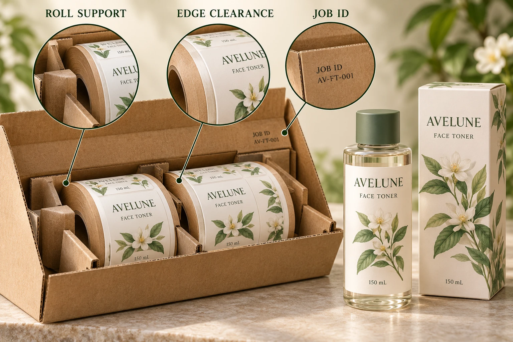

Begin with the receiving unit
Establish what the site expects to receive: individual rolls, an identified inner pack or a carton containing a defined mix. Include the roll build already agreed with the operator. The roll specification guide addresses core, diameter, winding and web requirements; packing must preserve the usability of that identified supply.
Tell the supplier whether several designs look similar and whether the site needs them separated. Grouping everything under one purchase-order number may be insufficient for a packer choosing one approved version at a time. Ask which information will appear on the roll, inner pack and outer carton.
Do not assume every layer needs the same amount of text. The goal is to let the receiving team connect the physical unit with the relevant artwork and job without an undocumented interpretation.
Ask what supports the roll
Have the converter describe its proposed support and separation arrangement for the actual roll size and construction. Identify surfaces that could contact the web, roll edges or core. Ask how the roll is kept from moving into those surfaces under the intended packing arrangement.
This is a request for the supplier's supported proposal, not a universal instruction to place every roll in one orientation or use a particular divider. A packing method suitable for a small roll may not establish a suitable method for a different build or route.
Keep any special receiving constraint visible. If the site has a particular unpacking or handling process, have it review the proposal before bulk dispatch. An improvised correction at the warehouse is a poor substitute for agreeing an appropriate unit in advance.
Match route information to evidence
The shipping page connects method and timing with the destination and package characteristics. Obtain the actual shipment proposal for this order. A previous delivery by another route does not automatically demonstrate the current packing arrangement.
Where a formal transit evaluation is warranted, the responsible packaging and logistics parties should select the procedure and acceptance requirements. This article supplies no drop height, vibration schedule or humidity limit. Those details need the actual package, distribution conditions and applicable evaluation method.
A representative packed sample can still resolve practical questions: whether the specified rolls fit, whether references are visible and whether receiving can unpack the unit as intended. Record that limited scope rather than calling a fit review a transport qualification.
Write a packing approval that can be checked
Keep the packing reference with the order rather than in an unlinked photo message. The following record can be a simple drawing and table, provided the relevant parties acknowledge it.
| Item | Input to record | Receiving check |
|---|---|---|
| Supply | Roll reference, construction and build | Does the physical unit match the order? |
| Support | Supplier's proposed packing drawing or sample | Is the intended support present? |
| Contact | Intended separation and protected areas | Has anything shifted or contacted an exposed area? |
| Identity | Design, revision, roll and carton references | Can the right unit be selected without guessing? |
| Mix | Designs permitted in each handling unit | Does the packing list match the contents? |
| Route | Actual dispatch and receiving arrangement | Does the proposal cover this journey? |
| Evidence | Fit review or identified transport evaluation | What has actually been established? |
| Exception | Photograph, affected unit and review owner | What happens before uncertain stock is used? |
First identify the supplied roll and destination. Obtain the packing proposal, let receiving review its practical requirements and agree any needed evaluation. At receipt, compare the delivered arrangement with that reference and preserve evidence of material differences.

Avoid turning the receiving check into a cause claim
If a roll is displaced or an edge is affected, record the carton condition, internal arrangement, roll identity and known handling history before altering the evidence. An intact outer carton does not prove the contents are suitable; a marked carton does not establish the cause of every internal observation.
Ask the supplier and receiving owner for the supported next step. Keep affected stock and separately reviewed stock identifiable. A packing worksheet cannot authorize rewinding, cleaning or operating an uncertain roll.
Two hypothetical orders can reasonably need different arrangements. A single design delivered to a bench team may require straightforward separation and identification. A mixed-version delivery into an OEM warehouse can need more deliberate references and distribution units. Additional packing is useful when it answers a receiving task, rather than when it merely looks elaborate.
For custom cosmetic labels, send the roll specification, quantity by artwork, destination and receiving requirements. Ask for the proposed packing and identification reference, including any important restriction. Use the contact form to prepare a message; share drawings and photographs separately by email or WhatsApp. Agree what receiving should find inside the carton while the arrangement can still be quoted.